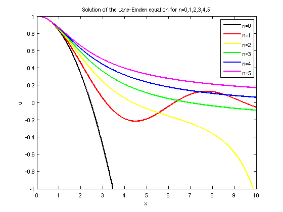
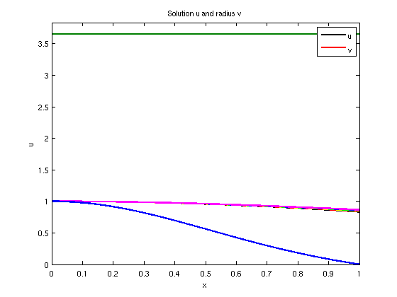

Lane-Emden equation from astrophysics
Alex Townsend, 6th May 2011
(Chebfun example ode/LaneEmden.m)
Contents
This example is motivated by discussions with the astronomer Alfred Gautschy. The equation is also a demo in chebgui (in the IVP section).
Introduction
The well-known Lane-Emden equation models the mechanical structure of self-gravitating spheres. In astrophysics it plays an important role as it serves to model the structure of stars, ranging from white dwarfs to red giants. The equation is given by
x*u'' + 2*u' + x*u^n = 0, u'(0) = 0, u(0) = 1
where u is the solution (known as a polytrope) which models the density of the gas cloud. The variable x corresponds to the radial distance from the centre. The gas is assumed to be polytropic with index n, that is pressure = C*density^(1+1/n) where C is a constant.
Integer polytropic index
Below we compute the polytropes for index n=0:5
%Colour matrix to make the plot pretty. myColor = [0 0 0; 1 0 0; 1 1 0; 0 1 0; 0 0 1; 1 0 1]; %n = Characteristic exponent for n = 0:5 % Assign the L-E operator on that domain. N = chebop(@(x,u) x.*diff(u,2)+2.*diff(u)+x.*u.^n,[0,10]); % Left boundary conditions N.lbc = @(u) [u-1,diff(u)]; %Solve the bvp u = solvebvp(N,0); % Create plot of the solutions plot(u,'Linewidth',2,'Color',myColor(n+1,:)), hold on, axis([0 10 -1 1]), title('Solution of the Lane-Emden equation for n=0,1,2,3,4,5'), xlabel('x'), ylabel('u') end legend('n=0','n=1','n=2','n=3','n=4','n=5');
Analytic solutions exist when n=0, 1 and 5. So we can check the numerical error in these cases. We just do n=5:
Analytic solution from [3]:
f = chebfun(@(x) (1+x.^2/3).^-.5,[0,10]);
Compute the L2 error
fprintf('The L2 error is: %1.3e\n', norm(f-u));
The L2 error is: 1.163e-14
Finding the polytropic radius
Physically, the first root of the solution is of interest as it defines the outer boundary of the sphere where the gas cloud is polytropic. Since the magnitude of the radius is not known a priori, it can be introduced as an unknown function v; the independent variable can then be transformed as x -> x/v. We then use a perturbation trick by a small factor eps to stop Chebfun from using maps and exponents.
As an example we choose the polytropic index to be n=1.5, appropriate to model the structure of a white dwarf.
d = [0,1]; x = chebfun('x',d); N = chebop(d); n = 1.5; eps = 1e-8; N.op = @(x,u,v) x.*diff(u,2) + 2*diff(u) + x.*v.^2.*(u+eps).^n; N.lbc = @(u,v) [u-1,diff(u)]; N.rbc = @(u,v) u; % N.init = [1-x.^2,1]; N.init = [cos(pi/2*x),pi]; uv = N\0;
plot(uv,'Linewidth',2), hold on, axis([0 1 0 1.05*uv(1,2)]), title('Solution u and radius v'), legend('u','v') xlabel('x'), ylabel('u')
Thus the radius of the polytrope describing the structure of a white dwarf is
v = uv(:,2);
fprintf('Polytropic range for white dwarfs: [0,%1.4f)\n',v(1));
Polytropic range for white dwarfs: [0,3.6538)
References
[1] Chandrasekhar, S. An Introduction to the Study of Stellar Structure.
[2] Horedt, George Paul (1986) 'Seven-digit tables of Lane-Emden functions'
[3] Wikipedia article: 'http://en.wikipedia.org/wiki/Lane-Emden_equation'